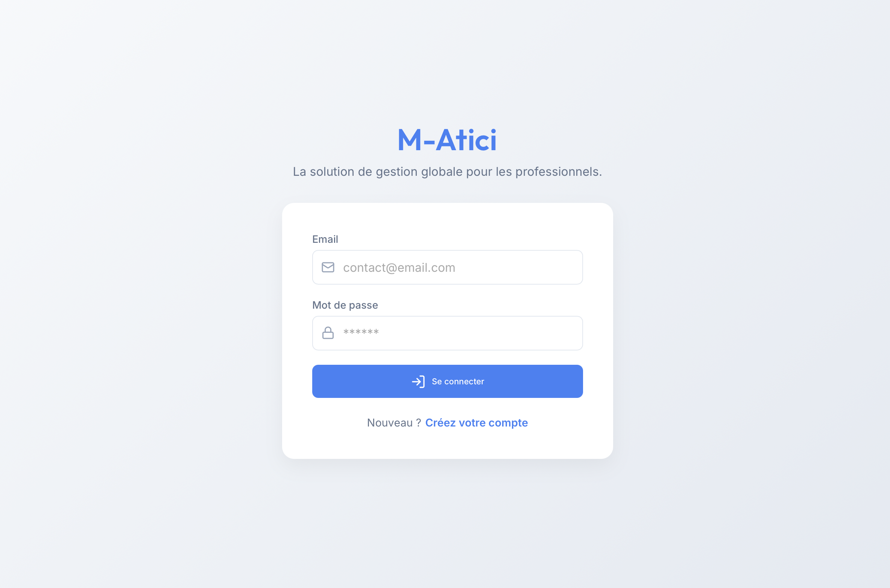
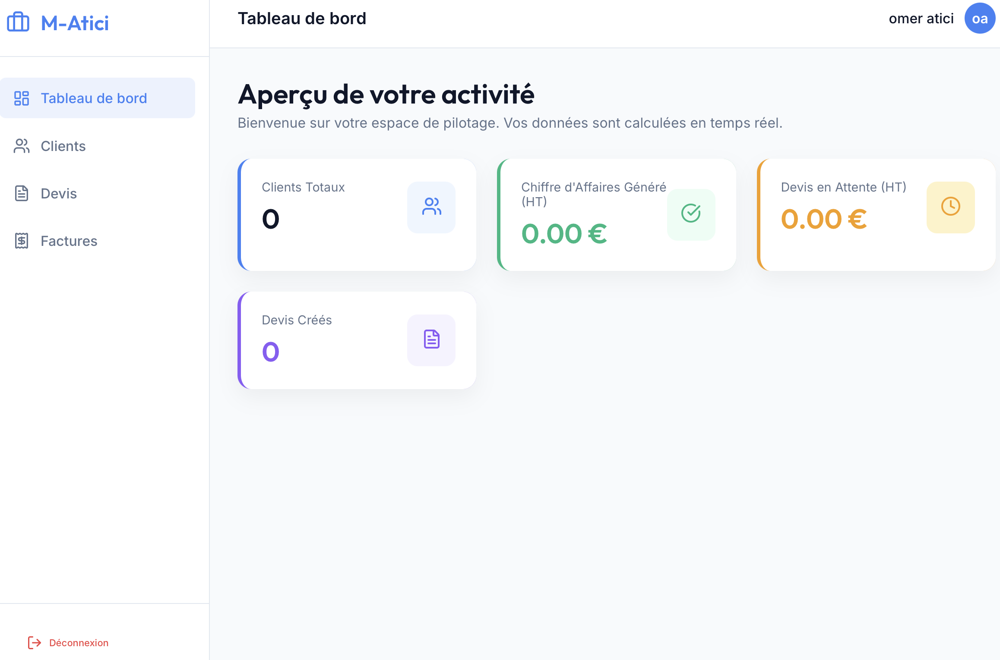
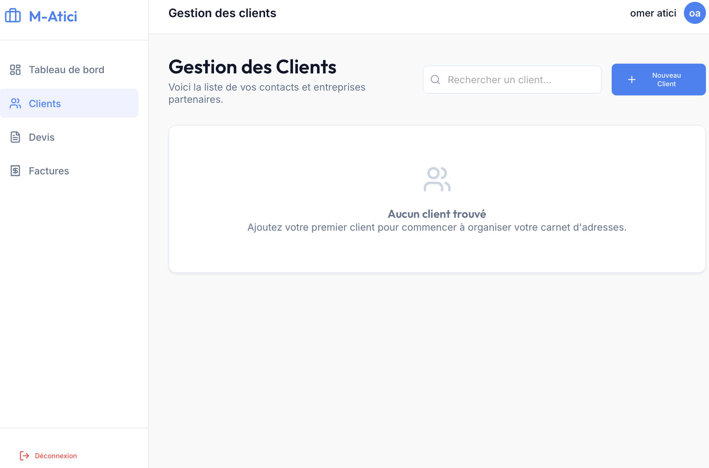
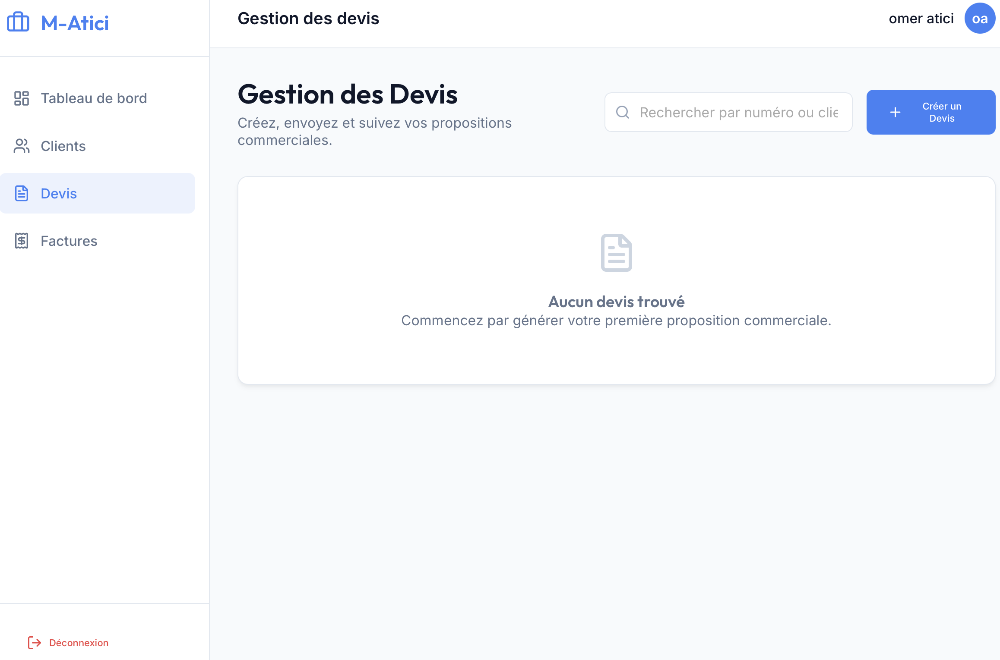
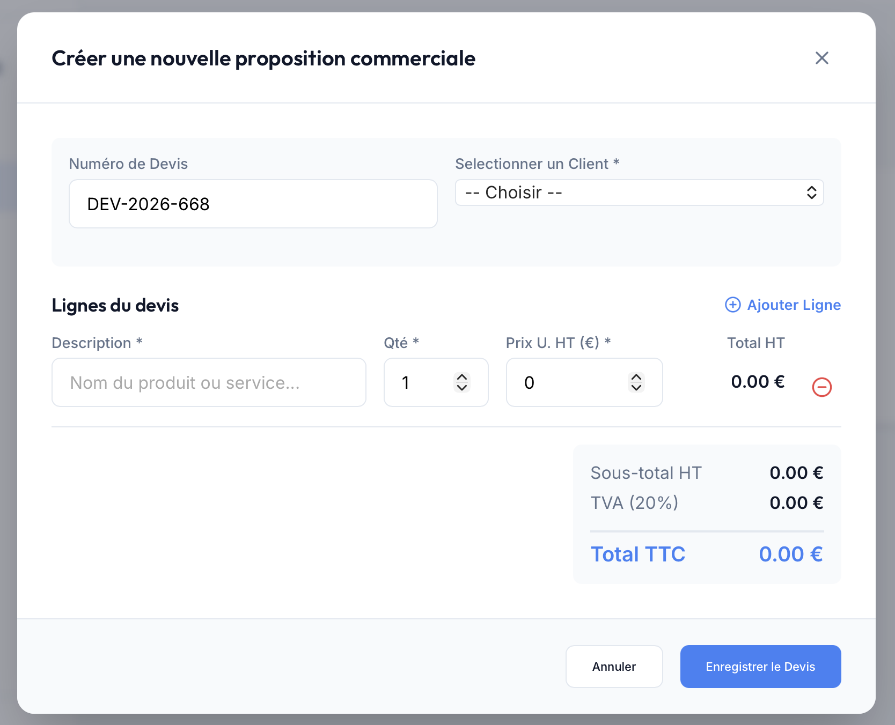
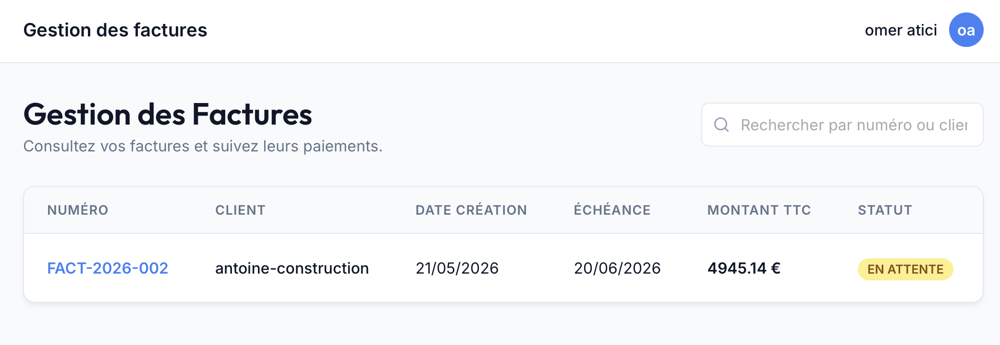
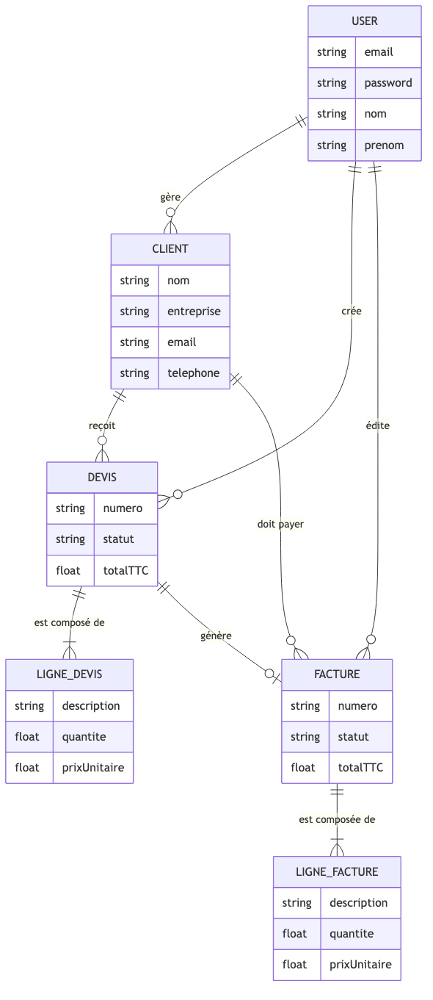
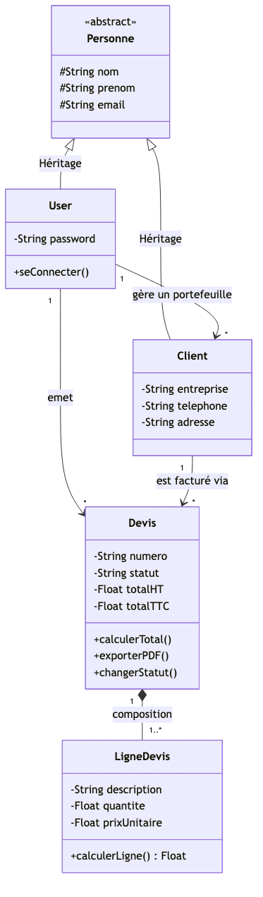
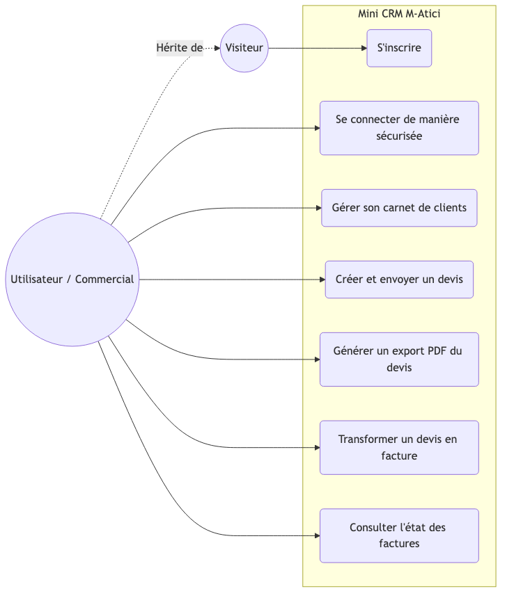
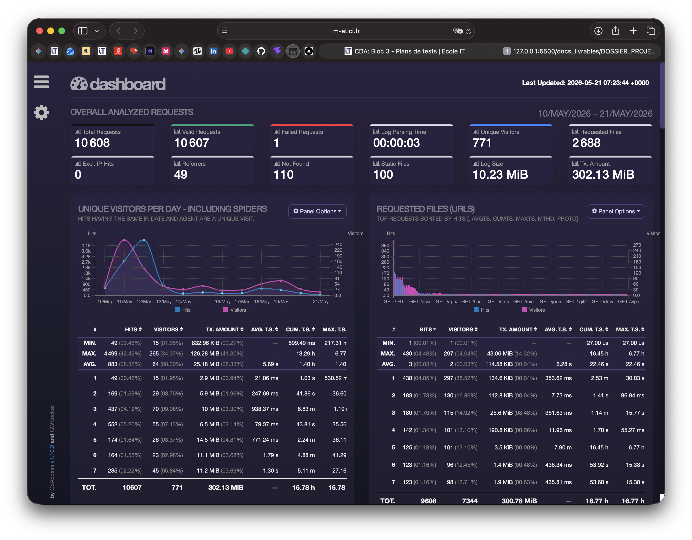

Candidat : Omer ATICI | Certification : Titre Professionnel CDA | Année : 2026
Ce projet de Mini CRM a été conçu pour valider les blocs de compétences du titre de Concepteur Développeur d'Applications (CDA) :
| Compétence visée (Référentiel CDA) | Implémentation dans le projet |
|---|---|
| Maquetter une application | Création du parcours utilisateur (Mobile-First). |
| Développer une interface utilisateur | Développement d'une SPA avec React.js et intégration responsive via Tailwind CSS. |
| Concevoir une base de données | Réalisation du MCD/MLD et élaboration du schéma relationnel sous PostgreSQL. |
| Mettre en place une base de données | Déploiement d'un conteneur Docker Postgres et application des migrations via Prisma. |
| Développer des composants d'accès aux données | Création d'une API REST Node.js/Express communicant avec la BDD via l'ORM Prisma. |
| Élaborer des jeux d'essai | Création de scripts de seeding automatisés pour générer de fausses données (clients, devis). |
| Développer la partie back-end | Implémentation des routes, de la logique métier (calcul TTC) et de la sécurité serveur. |
| Déployer une application | Mise en production sur un VPS Linux OVH, encapsulation Docker et proxy Caddy Server. |
La gestion administrative est souvent le point faible des artisans, freelances et très petites entreprises (TPE). La plupart de ces acteurs utilisent encore des solutions bureautiques inadaptées, chronophages et sources d'erreurs (fichiers Excel non centralisés, factures Word sans numérotation légale). L'objectif du projet est de fournir une solution logicielle sur-mesure, accessible en ligne (SaaS) : le Mini CRM.
Julien, Artisan Plombier : Il a besoin de gérer son carnet d'adresses et de faire des devis depuis sa tablette directement sur les chantiers. Il perd actuellement trop de temps le soir à rédiger ses factures avec des outils inadaptés. Il lui faut une application rapide qui génère des PDF conformes.
Le développement a été piloté par une méthodologie Agile (Kanban). La traçabilité des évolutions est assurée par un tableau de suivi découpé en colonnes (À faire, En cours, Test, Terminé).
La gestion du code source s'appuie sur le versionnement Git (GitHub) avec des commits atomiques respectant la norme Conventional Commits (ex: feat:, fix:, docs:), permettant un travail incrémental et un historique de code lisible pour les révisions (Code Review) et l'intégration continue.
Les fonctionnalités de l'application ont été développées en suivant les spécifications de User Stories précises.
Description : Inscription et connexion sécurisée via email et mot de passe. L'interface se veut claire et épurée pour encourager la conversion.

Description : Une fois connecté, l'utilisateur a accès à une vue d'ensemble de son activité.

Description : L'artisan peut ajouter, modifier et lister ses clients, avec une recherche rapide.

Description : Création d'un devis en associant un client et en ajoutant des lignes de prestations. Les totaux HT, TVA et TTC se calculent automatiquement.


Description : L'utilisateur peut convertir un devis accepté en facture officielle (ex: FACT-2026-001) et la télécharger au format PDF.

La persistance des données repose sur un SGBDR robuste : PostgreSQL. Le projet intègre une architecture Multi-tenant : chaque ressource métier (Client, Devis, Facture) est fortement liée à l'Utilisateur l'ayant créée, garantissant un cloisonnement strict des données entre les différents artisans utilisant la plateforme SaaS.



Au lieu d'écrire des requêtes SQL brutes ou d'utiliser un ORM obsolète, le projet utilise Prisma, un ORM nouvelle génération. Prisma génère un client typé dynamiquement, prévenant les erreurs lors de la compilation plutôt qu'à l'exécution.
Voici un extrait réel du fichier schema.prisma démontrant la gestion des relations et les contraintes de base de données :
// Générateur du client Prisma
generator client {
provider = "prisma-client-js"
}
// Table des devis
model Devis {
id Int @id @default(autoincrement())
numero String @unique
statut String @default("brouillon") // brouillon, envoyé, accepté, refusé
dateEmission DateTime @default(now())
dateEcheance DateTime?
totalHT Float @default(0)
totalTTC Float @default(0)
tva Float @default(20)
// Relation vers l'utilisateur propriétaire
userId Int
user User @relation(fields: [userId], references: [id])
// Relation vers le client associé
clientId Int
client Client @relation(fields: [clientId], references: [id])
// Lignes du devis (Cascade delete)
lignes LigneDevis[]
// Relation optionnelle vers la facture générée
facture Facture?
}
L'application respecte une architecture Client-Serveur totalement découplée, favorisant la scalabilité et la maintenance.
| Couche | Technologie | Justification |
|---|---|---|
| Backend API REST | Node.js & Express.js | Performance I/O non-bloquante, cohérence JS full-stack. |
| Base de Données | PostgreSQL & Prisma | Robustesse transactionnelle, typage strict et auto-migration. |
| Génération PDF | Puppeteer | Moteur Chrome Headless côté serveur pour un rendu HTML vers PDF pixel-perfect. |
| Frontend SPA | React.js & Vite | Rendu dynamique côté client, Hot Module Replacement (HMR) ultra-rapide. |
| Stylisation | Tailwind CSS | Design system orienté utilitaire, permettant un rendu responsive (Mobile-first) très rapide sans CSS spaghetti. |
| Réseau client | Axios | Librairie HTTP fiable, intercepteurs permettant l'injection automatique du jeton de sécurité. |
Côté client, l'application est une Single Page Application (SPA). Le rechargement de page est évité grâce à l'utilisation de react-router-dom. Le routage inclut une logique de protection : un utilisateur non authentifié est automatiquement redirigé vers l'écran de connexion.
Extrait de App.jsx illustrant cette architecture de routage protégée :
import { useState } from 'react';
import { BrowserRouter, Routes, Route, Navigate } from 'react-router-dom';
import Authentification from './pages/Authentification';
import Layout from './composants/Layout';
// ... autres imports
function App() {
const [estConnecte, setEstConnecte] = useState(!!localStorage.getItem('crm_token'));
// Protection d'accès : Si pas connecté, affiche le composant d'authentification
if (!estConnecte) {
return <Authentification onLoginSuccess={() => setEstConnecte(true)} />;
}
// Application protégée avec Système de Routage imbriqué
return (
<BrowserRouter>
<Routes>
{/* Le composant Layout encapsule toutes les pages sécurisées */}
<Route path="/" element={<Layout onLogout={gererDeconnexion} />}>
<Route index element={<Dashboard />} />
<Route path="clients" element={<Clients />} />
<Route path="devis" element={<Devis />} />
<Route path="factures" element={<Factures />} />
<Route path="*" element={<Navigate to="/" replace />} />
</Route>
</Routes>
</BrowserRouter>
);
}
La sécurité applicative est la priorité absolue d'une solution SaaS manipulant des données financières.
bcrypt (ils n'apparaissent jamais en clair dans la BDD).L'authentification ne se base pas sur des sessions stockées côté serveur (étatless), mais sur des JSON Web Tokens (JWT) signés cryptographiquement. À chaque appel API, le client envoie son token dans le header Authorization.
Voici l'extrait du middleware métier (authentification.middleware.js) développé pour intercepter et valider ces requêtes :
const jwt = require('jsonwebtoken');
/**
* Middleware d'authentification
* Vérifie la présence et la validité du token JWT dans l'en-tête de la requête HTTP.
*/
module.exports = (req, res, next) => {
try {
const enTeteAutorisation = req.headers.authorization;
if (!enTeteAutorisation) {
return res.status(401).json({ message: "Requête non authentifiée. Token manquant." });
}
// Récupération du token après le mot clé "Bearer" (norme OAuth2)
const token = enTeteAutorisation.split(' ')[1];
// Vérification de l'intégrité du token via la clé secrète serveur
const tokenDecode = jwt.verify(token, process.env.JWT_SECRET);
// Transmission sécurisée de l'ID utilisateur aux routes (controllers) suivantes
req.utilisateurId = tokenDecode.id;
next(); // Autorisation accordée, on passe au controller métier
} catch (erreur) {
res.status(401).json({ message: "Token invalide ou expiré." });
}
};
Grâce à ce composant, toute tentative d'accès à une route protégée sans token valide est bloquée instantanément avec un code HTTP 401 (Unauthorized).
Pour garantir la fiabilité de la solution en production, des processus d'Assurance Qualité (QA) rigoureux ont été mis en place.
Le cœur métier de l'application a été isolé pour être testé via le framework Jest. Ces tests garantissent que les règles métier critiques (comme la facturation) sont exactes et résilientes face aux mises à jour futures.
Extrait de calculDevis.test.js qui valide les algorithmes financiers :
const { calculerTotalDevis } = require('../utils/calculDevis');
describe('Calculs des devis', () => {
it('doit calculer le total HT et TTC correctement pour une seule ligne', () => {
const lignes = [{ quantite: 2, prixUnitaire: 50 }];
const resultat = calculerTotalDevis(lignes);
expect(resultat.totalHT).toBe(100);
expect(resultat.totalTTC).toBe(120); // Test TVA par défaut à 20%
expect(resultat.tva).toBe(20);
});
it('doit calculer le total HT et TTC correctement pour plusieurs lignes', () => {
const lignes = [
{ quantite: 1, prixUnitaire: 100 },
{ quantite: 3, prixUnitaire: 20 }
];
const resultat = calculerTotalDevis(lignes);
expect(resultat.totalHT).toBe(160);
expect(resultat.totalTTC).toBe(192); // Vérification de la somme matricielle
});
});
Pour garantir la fiabilité, la robustesse et la stabilité de l'application M-Atici CRM (spécifiquement sa partie back-end qui gère les données sensibles de facturation et de devis), une stratégie de tests unitaires et d'intégration a été mise en place avec Jest.
Le tableau ci-dessous présente le résumé d'exécution et le taux de couverture des instructions, des branches décisionnelles, des fonctions et des lignes pour chaque module de l'API :
| Module / Fichier | Instructions (Stmts %) | Branches (%) | Fonctions (%) | Lignes (%) |
|---|---|---|---|---|
| Moyenne Globale (Tous les fichiers) | 73.88 % | 43.90 % | 77.77 % | 74.19 % |
middlewares/authentification.middleware.js |
100.00 % | 100.00 % | 100.00 % | 100.00 % |
services/authentification.service.js |
100.00 % | 100.00 % | 100.00 % | 100.00 % |
services/clients.service.js |
100.00 % | 100.00 % | 100.00 % | 100.00 % |
services/devis.service.js |
51.16 % | 14.28 % | 66.66 % | 51.16 % |
services/email.service.js |
58.82 % | 100.00 % | 66.66 % | 58.82 % |
services/factures.service.js |
63.88 % | 31.25 % | 66.66 % | 64.70 % |
utils/calculDevis.js |
100.00 % | 100.00 % | 100.00 % | 100.00 % |
clients ainsi que le module utilitaire de calcul des devis (calculDevis.js) sont testés de manière exhaustive pour écarter tout risque d'erreur d'arrondi ou de logique sur les calculs financiers complexes.Le code n'est pas déployé à l'aveugle. Un pipeline automatisé s'exécute sur les serveurs de GitHub à chaque push. Si les tests échouent, le pipeline s'arrête, bloquant ainsi le déploiement d'une régression en production.
Extrait du workflow YAML (main.yml) :
name: CI/CD Pipeline
on: [push]
jobs:
verifier-code:
runs-on: ubuntu-latest
steps:
- uses: actions/checkout@v3
- name: Installer Node.js
uses: actions/setup-node@v3
with:
node-version: 20
- name: Test backend
run: |
cd backend
npm install
npx prisma generate
npm test
deploiement:
needs: verifier-code
runs-on: ubuntu-latest
if: github.ref == 'refs/heads/main'
# La suite du pipeline s'exécute uniquement si 'verifier-code' a réussi
L'application n'est pas qu'un projet local, elle est intégralement déployée en environnement professionnel sur un serveur VPS OVHcloud accessible sous un domaine dédié (m-atici.fr).
L'intégralité de l'écosystème est "conteneurisée". Ceci assure que l'application s'exécute de manière identique en développement, en phase de test et en production.
Extrait du fichier docker-compose.yml démontrant la liaison des microservices :
services:
# Base de données
db:
image: postgres:15
environment:
POSTGRES_DB: crm
# ... variables secrètes d'environnement
volumes:
- db_data:/var/lib/postgresql/data
# Backend API Node.js
backend:
build: ./backend
environment:
- DATABASE_URL=postgresql://user:password@db:5432/crm
ports:
- "3000:3000"
depends_on:
- db
# Serveur Web Caddy (Reverse Proxy + Let's Encrypt SSL)
caddy:
image: caddy:2-alpine
restart: unless-stopped
ports:
- "80:80"
- "443:443"
depends_on:
- frontend
- backend
Caddy a été préféré à Nginx pour sa simplicité et sa capacité native à générer et renouveler automatiquement les certificats SSL via Let's Encrypt. Tout le trafic est chiffré en HTTPS, sécurisant ainsi l'échange des tokens JWT et des mots de passe.
Le conteneur GoAccess analyse les logs générés par le serveur web (Caddy) et restitue un tableau de bord visuel des statistiques de trafic réseau en temps réel, permettant de surveiller la santé du serveur.

cron) sont configurées sur le système hôte du VPS :
- Relances de paiement automatiques (US4) : Un script autonome (backend/src/scripts/alerteRetard.js) s'exécute chaque jour pour détecter les factures "en attente" dont l'échéance est dépassée, passer leur statut à "en retard" et envoyer un e-mail de rappel automatique au client via Nodemailer.
- Sauvegarde automatisée de la base de données : Un script shell (scripts/backup-db.sh) est lancé toutes les nuits pour exporter la base PostgreSQL (pg_dump) depuis le conteneur Docker. Le script compresse la sauvegarde et applique une politique de rétention de 7 jours (respect du droit à l'oubli).
Afin de pouvoir tester et présenter l'application aux correcteurs et clients potentiels sans partir d'une base vide, un script professionnel de "Seeding" a été développé (intégré nativement via la commande d'ORM npx prisma db seed).
Ce jeu d'essai manipule directement l'API Prisma pour injecter de fausses données relationnelles cohérentes :
admin@m-atici.fr).Ce processus permet de valider empiriquement le bon fonctionnement des filtres de la base de données, des requêtes de jointure de l'API, des algorithmes de calcul des totaux sur le Dashboard, et de la pagination de l'interface graphique.
Le développement de ce projet a été alimenté par une veille technologique active, primordiale dans l'écosystème web en perpétuelle évolution.
Sources d'informations (Outils) :
Cibles de la veille (Sécurité) :
npm audit et des alertes GitHub Dependabot pour maintenir les dépendances à l'abri des failles zero-day.Mise en pratique au sein du projet :
Problématique rencontrée : La génération des factures PDF avec Puppeteer en environnement de production conteneurisé.
En phase de développement local (sur OS de bureau Mac/Windows), la génération de fichiers PDF à l'aide de Puppeteer (outil qui lance un navigateur Google Chrome invisible côté serveur pour faire le rendu de la facture) fonctionnait parfaitement. Cependant, lors du premier déploiement en production sur le serveur VPS OVH (qui tourne sous Linux encapsulé dans Docker), l'application Node.js crashait systématiquement au moment critique de générer une facture pour le client.
Démarche de recherche et Résolution :
docker logs <container_id> a mis en évidence une erreur fatale (Failed to launch the browser process). L'erreur indiquait un manque flagrant de bibliothèques systèmes dynamiques, normalement fournies par une interface graphique, mais absentes d'une image Docker Node minimaliste (Alpine/Debian Lite).libnss3, libxss1, libasound2...).--no-sandbox et --disable-setuid-sandbox. Ces drapeaux (flags) désactivent une fonctionnalité de bac-à-sable de Chrome qui entre en conflit direct avec le bac-à-sable natif de Docker, autorisant ainsi la génération de PDF en parfaite sécurité au sein du serveur VPS.Le cycle de conception, développement et déploiement de ce Mini CRM SaaS m'a permis d'appliquer concrètement et avec succès l'ensemble du périmètre des compétences attendues d'un Concepteur Développeur d'Applications (CDA).
De l'étude de faisabilité UX jusqu'au monitoring réseau de l'infrastructure Docker hébergée, ce projet s'est mué en un logiciel Minimum Viable Product (MVP) professionnellement fonctionnel, sécurisé, et prêt à absorber de la charge.
Perspectives d'évolution techniques et fonctionnelles (Roadmap) :